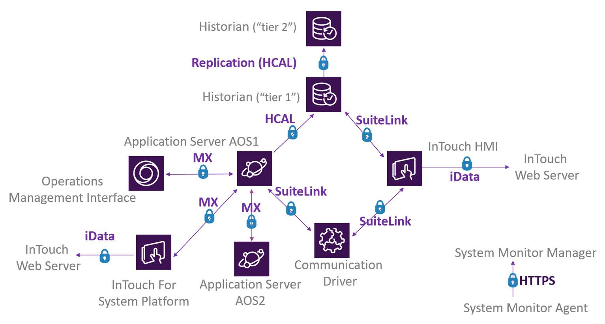
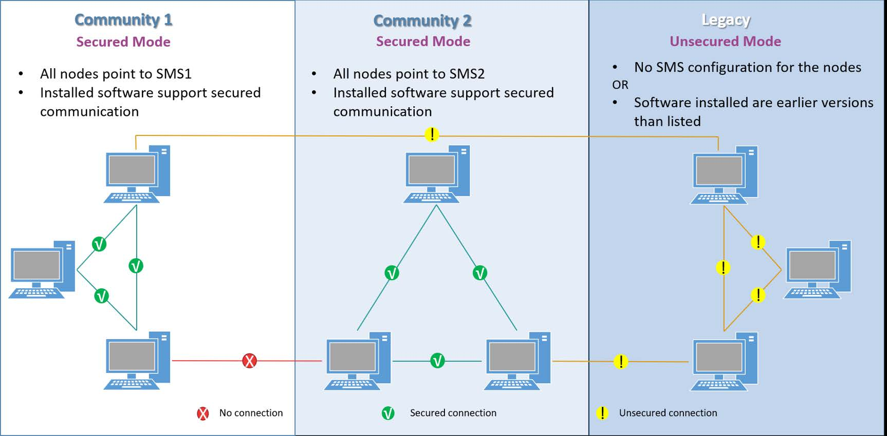
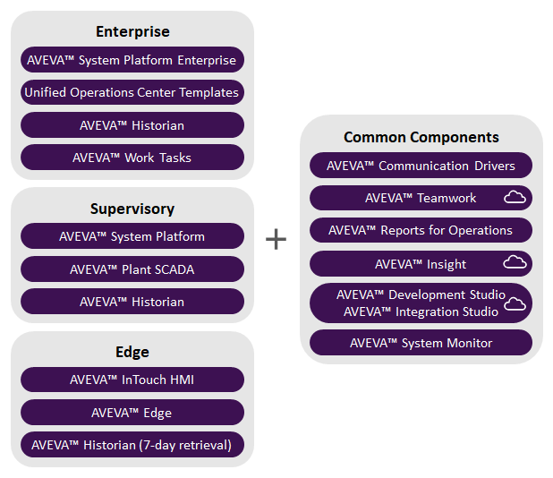

Module 1 — Introduction | Pages 33-42
Section 3 – Visualization Overview
AVEVA™ Operations Management Interface 2023
Section 3 – Visualization Overview
Introduction
Application Server provides tools for developing interactive and animated graphical displays. The
behavior of these displays, including animations and visual representations, can be associated
with properties of processes and equipment through real-time data provided by System Platform.
System Platform’s visualization clients provide multiple user interface capabilities, including
keyboard, mouse, tablet, and touch-screen inputs, as well as multi-screen outputs.
Visualization Clients
System Platform clients for visualization are Operations Management Interface and InTouch for
System Platform. Both run the operator interface and display data from objects defined in an
Application Server Galaxy. They can coexist in the same System Platform solution and share data
and graphics.
Operations Management Interface leverages both HMI and SCADA systems to deliver a
convergence platform for both Operational Technology (OT) and Information Technology
(IT). It provides a visualization engine for rich, modern user experiences across platforms.
Key features, capabilities, and components are described starting in Module 2, as well as
in the documentation provided with the product.
InTouch for System Platform provides traditional development tools for creating displays
and corresponding navigation. For more details, refer to the documentation provided with
that product.
Visualization Content
Several types of content that can be used to build visualization client applications are described
below.
Industrial Graphics
Industrial graphics allow you to create customized graphical representations of processes and
integrate other visualization tools into your application. They can be embedded or associated with
automation objects in Application Server, so that alarms, history, logic, graphics, and so on can all
be defined with the same automation object. This allows greater flexibility of application
development, including:
Object reuse: Objects can be derived from templates and preconfigured to work within
the environment in which they are embedded to reference applicable object attributes.
Centralized development: Application development can be centralized, including
graphical representations of equipment.
Industrial graphics are also referred to as symbols in Application Server.
This section introduces visualization concepts and describes AVEVA Operations Management
Interface as one of the visualization clients of AVEVA Application Server.
Module 1 – Introduction
AVEVA™ Training
Client Controls
Client controls provide functionality contained in .NET controls that you can use in symbols.
External .NET controls can be imported into a Galaxy and used in symbols by embedding them.
Symbols with embedded .NET controls are only supported by InTouch for System Platform. To use
a .NET control in an Operations Management Interface application, it must be imported as an OMI
App.
Operations Management Interface Content
The following types of content or components are designed and supported in Operations
Management Interface applications only:
Screen profiles determine where, meaning on which display screens, you want to
present content in a running Operations Management Interface application.
Layouts define how you want to organize content in a running Operations Management
Interface application.
OMI Apps are prebuilt, special-purpose collections of one or more controls that can be
added to layouts to display content in a running Operations Management Interface
application. These are sometimes referred to as Apps.
Widgets are mini-apps that can be added to Operations Management Interface
applications. They are also supported for InTouch applications and the Web Client.
Widgets generally display data, take up more space than a single icon, and can be
interactive and resizable. They are sometimes referred to as HTML5 Widgets.
External content refers to media content outside of a Galaxy that can be linked to an
Operations Management Interface application and displayed at runtime.
AVEVA Connect for Graphics
AVEVA Connect provides a cloud-based repository that lets you share graphics between
locations, Galaxies, and nodes. You can sign in to AVEVA Connect within the System Platform IDE
to add AVEVA Connect to the Graphics toolbox, which provides a centralized storage and access
point for reusable industrial graphics.
Graphics in AVEVA Connect are stored in stores, which can be global, tenant, or user specific.
Multiple drives can be configured within each store, and each drive can be configured with
different access levels for different users. An AVEVA Connect account is required to manage
graphics in the cloud.
AVEVA Connect users can have read-only or read/write access, depending on the access granted
by their administrator. Read-only users can view graphics in the cloud, but cannot upload or
download graphics. Multiple users can access the graphics in the same drive, but only one user at
a time can edit or save a graphic to the drive.
For more information, refer to the topic “Using AVEVA Connect” in the System Platform 2023
online Help.
Section 4 – Encrypted Communication
AVEVA™ Operations Management Interface 2023
Section 4 – Encrypted Communication
The end-to-end communication between software applications (server and client) can be
encrypted and secured to prevent eavesdropping and malicious tampering (also known as Man-in-
the-Middle) attacks.
To enable encrypted network communication, one of the nodes in the network must be configured
to host and run the System Management Server (SMS). The role of the System Management
Server is to generate, manage, and distribute secure digital certificates used for establishing and
maintaining secure communications.
All other nodes need to be configured to connect to the SMS so they all become part of the same
community.
The SMS does not need to be available at runtime for secure communications to be established.
In fact, once joined to the SMS, a node will not need access to the SMS until it is time to renew the
certificates.
Protocols that Benefit From Encrypted Communication
With encrypted communication, all of the following protocols are secured:
SuiteLink
Message Exchange (MX)
iData
iBrowse
HCAL
This section describes the encrypted communication for end-to-end communication between
server and client software applications.
Module 1 – Introduction
AVEVA™ Training
Software that Supports Secured Communication
The following software supports secured communication:
Application Server 2017 Update 3 and later
InTouch Operations Management Interface 2017 Update 3 and later
InTouch for System Platform 2017 Update 3 and later
*OI Server
InTouch Web Client in 2017 Update 3 and later
Historian 2017 Update 3 and later
Sentinel System Monitor 1.1 for System Platform 2017 Update 3 and later
*Communications from the specific OI Server to any other products listed above can be encrypted.
This is generic and applies to all OI Server versions.

Section 4 – Encrypted Communication
AVEVA™ Operations Management Interface 2023
Node-to-Node Communication
Node-to-node communication is unsecured under certain scenarios, including the following:
The version of the software installed on one or more nodes is earlier than 2017 Update 3
(Communication Driver version has no impact)
One node points to a System Management Server, but there is no System Management
Server configured on the other node
There is no System Management Server configured for both nodes
Please note that if one node points to one System Management Server and the other node points
to another System Management Server, there will be NO network connection between the nodes.

Module 1 – Introduction
AVEVA™ Training
Section 5 – System Requirements and Licensing
AVEVA™ Operations Management Interface 2023
Section 5 – System Requirements and Licensing
Software and Hardware Requirements
The following topics describe software and hardware requirements for System Platform.
hardware and software requirements, compatibility information, key product notes, and additional
resources. Or, visit the Knowledge & Support Center at https://softwaresupport.aveva.com.
Software Requirements
The following table lists supported and preferred software requirements for various nodes in your
system:
Hardware Requirements
The following tables list minimum and recommended hardware requirements.
For server nodes, such as Historian Server, the GR node, AppEngine host (Application
Objects Server), and the System Platform IDE (development environment):
For client nodes, such as nodes that run WindowViewer, an Operations Management
Interface application, Historian Client, and remote System Platform IDE:
This section describes system requirements for System Platform software and introduces the
licensing model.
Development
(System Platform IDE)
Galaxy
Repository
Automation
Object Server
Supervisory
Client
Windows Server
Preferred
Preferred
Preferred
Supported
Windows Workstation
Supported
Supported
Supported
Preferred
SQL Server
Not required
Required
Not required
Not required
.NET Framework
Required
Required
Required
Required
Level
Logical
Processors
RAM
Free Disk
Space
Network
Speed
Small
Minimum
4
2 GB
100 GB
100 Mbps
1-25K I/O per node
Recommended
8
4 GB
200 GB
1 Gbps
Medium
Minimum
8
8 GB
200 GB
1 Gbps
25-50K I/O per node
Recommended
16
12 GB
500 GB
1 Gbps
Large
Minimum
16
16 GB
500 GB
1 Gbps
> 50K I/O per node
Recommended
32
24 GB
1 TB
Dual 1 Gbps
Level
Logical
Processors
RAM
Free Disk
Space
Network
Speed
Minimum
4
1 GB
100 GB
100 Mbps
Recommended
8
4 GB
200 GB
1 Gbps
Module 1 – Introduction
AVEVA™ Training
For all-in-one nodes with all products on a single node. An all-in-one node includes
Application Server, InTouch, Historian, Historian Client, and Licensing components.
Licensing
The following topics provide general information about System Platform licensing.
Licensing Models
Two licensing models are available:
Perpetual licensing offers permanent licenses with no expiration date. A perpetual
license applies to a specific purchased software version.
Flex licensing offers subscription-based licenses that are renewed for a specific term.
The license is for credits redeemable to access a wide range of software based on needs
at the time. Visit https://sw.aveva.com/flex-subscription for more information on the Flex
program.
example, System Integrator consignments).
Activated Licensing
AVEVA software is license-enforced using an activated licensing framework with an activation
code. Management and activation of licenses are performed with the following components, which
are installed as part of the installation of your purchased products:
License Server: Acquires, stores, maintains, and serves licenses. It supports redundancy
and failover.
License Manager: Web-based user interface to access and maintain licenses.
License activation can be performed online or offline. Activation requires Internet access in both
cases. Consult your sales representative for availability of email and phone activation.
Online refers to Internet access on the License Server network.
Offline refers to activation off-site.
Refer to the documentation provided with your software product for more information on using the
License Server and License Manager.
Level
Logical
Processors
RAM
Free Disk
Space
Network
Speed
Small
Minimum
8
8 GB
200 GB
100 Mbps
1,000 IO Max
Recommended
12
12 GB
500 GB
1 Gbps
Medium
Minimum
12
16 GB
500 GB
1 Gbps
20,000 IO Max
Recommended
16
32 GB
1 TB
1 Gbps
Large
Minimum
20
32 GB
2 TB
1 Gbps
100,000 IO Max
Recommended
24
64 GB
4 TB
1 Gbps
Section 5 – System Requirements and Licensing
AVEVA™ Operations Management Interface 2023
System Platform Perpetual Licenses
System Platform perpetual licenses are available in different sizes. Each option is a combination of
a certain number of I/O points, Historian tags, and Communication Driver licenses.
Each System Platform license also includes:
One AVEVA Historian Client Web license
Remote Response Objects, which are not available out-of-the-box. They must be
downloaded from the Support site.
Note that:
One System Platform license is required per Galaxy.
System Platform licenses with 25K I/O points or less do not include a Microsoft SQL
Server Standard license.
System Platform licenses are provided for the runtime environment. For development
purposes, a Development Studio license is required. Otherwise, tools such as the System
Platform IDE will not launch. Development Studio licenses are offered only with the
subscription model.
Supervisory Client Licenses
A Supervisory Client license enables the use of Operations Management Interface and InTouch for
System Platform. It can be used for thick clients (desktop), thin clients (remote access, such as
Remote Desktop Server), or web clients through InTouch Access Anywhere (which uses Remote
Desktop Server).
Additionally, Supervisory Client licenses are available with or without a Historian Client license. A
read-only option is also available, which does not include capabilities to write back to the Galaxy or
acknowledge alarms.
Note that:
Each node running a supervisory client or multiple supervisory client applications
consumes one Supervisory Client license.
Supervisory Client licenses are provided for the runtime environment only. For
development purposes, a Development Studio license is required. Otherwise, tools such
as the System Platform IDE will not launch. Development Studio licenses are offered only
with the subscription model.
Module 1 – Introduction
AVEVA™ Training
AVEVA Operations Control
AVEVA Operations Control is a commercial offering that includes access to the AVEVA portfolio of
operations control software. It can only be licensed with an AVEVA Flex subscription using a
simplified license measured by named users. It is available in three editions:
Enterprise edition for IT/OT convergence aimed at driving collaboration and enterprise
visibility across regional or global operations
Supervisory edition for centralized management of distributed SCADA or operations
Edge edition for local process monitoring and control at the asset, equipment, or line
level. The AVEVA Historian license allows for retrieval of the last seven days of data.
Azure Active Directory
Starting with System Platform 2023, user identity authentication and single sign-on via Azure
Active Directory (AD) is supported. After setting Galaxy security to use an external identity
provider, Azure AD can be used to authenticate users. System Platform users can then use their
Microsoft-managed identities to log into the System Platform IDE, Operations Control
Management Console, Operations Management Interface ViewApps, and to perform secured and
verified writes.

Review above.